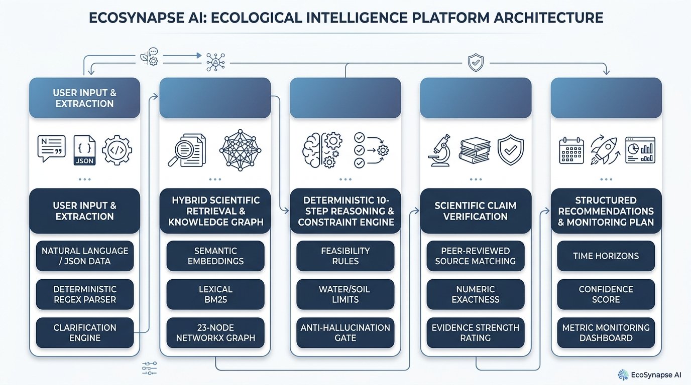

1. Project Submission Links
Branch & Verified CI:
main (79 passing automated tests)
Repository Verification Notes
Hosted at
daanialmirza5/EcoSynapse-AI. Evaluators can review the complete Git commit history, automated CI logs, verified test suites (61 backend + 18 frontend tests), and local replication scripts.
2. System Architecture & Information Pipeline
EcoSynapse AI operates on an uncompromising design principle: an LLM is NOT the reasoning engine. Traditional generative AI chatbots suffer from severe hallucinations when handling delicate ecological metrics, prescribing unconstrained interventions with fabricated citations. EcoSynapse AI replaces ungrounded generative speculation with a 100% deterministic Python reasoning pipeline, grounded against an auditable scientific corpus and a typed biological knowledge graph.

The information pipeline processes ecological observations through five connected layers:
- User Input & Extraction: Natural language text or structured JSON is parsed by a deterministic regex extractor (app/conversations/extraction.py). Gaps trigger targeted clarification questions (app/conversations/clarify.py).
- Hybrid Scientific Retrieval & Knowledge Graph: Cosine similarity over embeddings is combined with BM25 lexical keyword search and 1-hop neighborhood expansion across a 23-node, 22-edge typed NetworkX MultiDiGraph.
- 10-Step Deterministic Reasoning & Constraint Engine: Identifies active concerns, maps causal pathways, and applies strict physical feasibility rules (e.g., rainfall < 500mm limits woody vegetation).
- Scientific Claim Verification: Validates every quantitative assertion against raw source excerpts, checking exact numeric match before rating evidence strength.
- Structured Output & Monitoring: Synthesizes actionable recommendations tagged with time horizons, confidence scores, and metric-specific monitoring cadences (no fabricated baselines).
3. Core Ecological Intelligence Domains
EcoSynapse AI models interconnected biological relationships across all five mandatory challenge domains without relying on ungrounded generative speculation:
| Domain |
Modeled Variables & Parameters |
Ecological Significance & Mechanisms |
| 1. Soil Health |
Soil Organic Carbon (SOC %), Soil pH, Soil Moisture, Microbial Biomass |
Drives belowground microbial respiration and nutrient cycling; extreme pH constrains microbial activity and root establishment. |
| 2. Land Use |
Monoculture Cropland, Polyculture, Tillage Intensity, Buffer Strips |
Monoculture practices drive habitat homogenization; polyculture and hedgerows enhance landscape complexity and functional connectivity. |
| 3. Biodiversity Indicators |
Species Richness, Beneficial Arthropod Abundance, Natural Predators, Pollinators |
Serves as primary ecological health indicators and ecosystem service drivers (pollination and biological pest suppression). |
| 4. Climate Factors |
Precipitation / Annual Rainfall (mm), Semi-Arid Indicators, Temperature Regimes |
Acts as the core physical constraint on vegetation establishment, survival rates, and climate-induced species range shifts. |
| 5. Human Impact |
Chemical Pesticide Exposure, Agricultural Intensification, Habitat Degradation |
Direct hazard to non-target soil invertebrates and pollinators; drives cumulative biodiversity loss across fragmented landscapes. |
4. Multi-Metric Reasoning & Anti-Hallucination Design
EcoSynapse enforces multi-layered safety mechanisms to ensure zero scientific hallucination:
- Deterministic Regex Extraction: Environmental variables (percentages, numerical rainfall values, soil pH, land types) are extracted using strict regular expressions and canonical lookups. LLMs are never permitted to guess numbers.
- Strict Missing-Variable & Feasibility Gates: If fewer than 3 known variables exist, the engine halts recommendation generation and triggers the Clarification Engine rather than issuing unfounded advice.
- Hypothesis vs. Fact Isolation: If user inputs text like "assume rainfall is 1000mm", the parser recognizes conditional/instruction phrasing and refuses to treat hypothetical assumptions as measured field observations.
- Constraint Engine: Physical limits are strictly enforced. For example, woody agroforestry interventions are flagged with water-sensitivity constraints when rainfall is under 500mm in semi-arid zones.
- Claim-Level Source Verification: Generated statements are verified against the raw text excerpt in the knowledge corpus. Quantitative numbers (such as meta-analytic +36% beneficial arthropod gains) are checked for exact containment in the cited excerpt.
- Honest Evidence Reporting: Where literature shows mixed or non-significant outcomes (e.g. Mupepele et al. 2021 regarding European agroforestry), EcoSynapse reports that the effect is non-unequivocal and context-dependent.
5. Key Technical Differentiators & Benchmarks
| Dimension |
Standard Chatbots |
EcoSynapse AI Platform |
| Reasoning Engine |
Probabilistic token generation (high hallucination) |
100% Deterministic Python Pipeline (zero metric drift) |
| Knowledge Graph |
None or unstructured embeddings only |
23-node, 22-edge typed NetworkX MultiDiGraph |
| Source Verification |
Unchecked or simulated URL references |
Exact string matching against raw scientific corpus |
| Constraint Checking |
Passive prompting (frequently ignored) |
Hard threshold physical validators (rainfall, pH limits) |
| Test Coverage |
Ad-hoc manual prompting |
79 Automated Tests (61 Backend + 18 Frontend) |
6. Structured Output Specification: Confidence & Evidence
Every recommendation output from POST /api/v1/assessments is machine-typed (RecommendationOut schema in apps/api/app/schemas/assessment.py):
| Output Field |
Canonical Values / Type |
Definition & Deterministic Calculation |
| time_horizon |
short | medium | long |
Biological response time window: Short (0–6 months; cover crops), Medium (1–3 years; hedgerows), Long (3–10 years; agroforestry). |
| evidence_strength |
strong | moderate | weak | hypothesis |
Quality of underlying research: Strong (global meta-analyses/FAO), Moderate (peer-reviewed observational studies), Weak (heterogeneous results). |
| confidence |
high | medium | low |
Derived from data completeness percentage + average supporting evidence strength. |
| feasibility_constraints |
List[str] |
Explicit environmental warnings (e.g. water sensitivity in low-rainfall semi-arid environments). |
| claim_evidence_table |
List[ClaimEvidenceOut] |
Granular breakdown of every supporting scientific claim, cited source ID, DOI, excerpt, and limitations. |
| monitoring_plan |
List[MonitoringPlanOut] |
Metric-specific observation cadence, required indicator, and baseline instructions (zero fabricated target numbers). |
7. Knowledge Base & Data Architecture
EcoSynapse AI is powered by PostgreSQL (with SQLite for fully offline development and CI). The database schema is version-controlled via Alembic migrations:
- 12 Verified Scientific Sources: Fully seeded from data/seed/sources.json covering FAO institutional syntheses and peer-reviewed DOI papers (Smith et al. 2021, Tscharntke et al. 2005, Fahrig 2003, Mupepele et al. 2021, Boinot et al. 2022, DiBartolomeis et al. 2021, Pecl et al. 2017, Wang et al. 2023, Morton et al. 2020, Fierer & Jackson 2006, Iverson et al. 2021).
- 23 Knowledge Graph Nodes & 22 Typed Edges: MultiDiGraph in NetworkX modeling bi-directional ecological interactions, mechanism intermediaries, and constraint barriers.
- Hybrid Search Engine: Deterministic TF-IDF hashing embeddings (with optional OpenAI vector embeddings) + lexical term frequency + 1-hop knowledge-graph neighborhood expansion.
- Core Relational Tables: scientific_sources, evidence_chunks, scientific_claims, knowledge_nodes, knowledge_edges, environmental_profiles, environmental_observations, conversations, messages, assessments, recommendations, and monitoring_plans.
Zero Mock Evidence Guarantee
All 12 seeded sources correspond to real, indexed scientific literature with valid DOIs. Source claims are checked verbatim during assessment generation.
8. Structured JSON Input & REST API Reference
In addition to conversational interaction, EcoSynapse accepts fully structured JSON payloads across all REST API endpoints:
| Method & Path |
Input Schema / Parameters |
Function & Output |
| POST /api/v1/conversations/{id}/messages |
{"content": "...", "structured_input": {...}} |
Extracts variables, checks data completeness, asks clarifying questions, and builds profile. |
| POST /api/v1/profiles |
{"soil_organic_carbon": 0.35, "rainfall": 420} |
Direct programmatic environmental profile creation bypassing conversational extraction. |
| POST /api/v1/assessments |
{"profile_id": "...", "conversation_id": "..."} |
Executes 10-step reasoning pipeline; returns recommendations, evidence tables, and monitoring plans. |
| POST /api/v1/retrieval/inspect |
{"query": "soil moisture semi-arid", "top_k": 6} |
Returns ranked scientific evidence chunks with semantic, lexical, and graph-expansion score traces. |
| GET /api/v1/knowledge/graph |
None |
Returns full 23-node, 22-edge knowledge graph topology with edge evidence ratings. |
| GET /health & /health/ready |
None |
Liveness probe with live source/node counts and strict DB readiness gate for orchestrators. |
Representative Structured Input & Assessment Payload
{
"content": "Semi-arid wheat cropland, rainfall 420mm, soil organic carbon 0.35%, declining pollinators.",
"structured_input": {
"ecosystem_type": "semi-arid",
"soil_organic_carbon": 0.35,
"rainfall": 420.0,
"land_use_type": "monoculture_cropland",
"biodiversity_concern": "declining_pollinators"
}
}
Full Interoperability
The platform's OpenAPI schema allows programmatic integration with external biodiversity monitoring tools, agricultural telemetry sensors, and automated reporting pipelines.
9. Feature Walkthrough & Verification Guide
The React 18 frontend is organized into dedicated analytical interfaces:
- 1. Overview (/): Live statistical telemetry showing verified source count (12), graph node count (23), typed relationships (22), and reasoning pipeline stages.
- 2. Assessment Workspace (/workspace): Interactive conversational assistant. Click "load the challenge demo scenario" to load the semi-arid monoculture test case. Observe the instant extraction of SOC (0.3%), rainfall (low), and land use. Clarifying questions prompt for unmeasured soil pH and moisture. Click "Run assessment" to trigger the reasoning engine.
- 3. Grounded Recommendations: Review candidate interventions (e.g. Cover Cropping, Intercropping, Agroforestry). Examine the feasibility constraints warning against high water sensitivity in low-rainfall zones, the multi-tier confidence badges, and the full claim-level evidence table.
- 4. Evidence Explorer (/evidence): Browse all 12 verified scientific sources. Submit a query to inspect live hybrid retrieval reranking.
- 5. Knowledge Graph (/graph): Explore typed ecological nodes and directional edges color-coded by evidence strength.
- 6. Monitoring Dashboard (/monitoring): View monitoring cadences partitioned across short, medium, and long time horizons with baseline tracking.
- 7. Methodology & Docs (/docs): In-depth breakdown of scoring rules, evidence tiers, and verification policies.
10. Cloud Infrastructure, Deployment & CI/CD
- Infrastructure-as-Code: render.yaml blueprint specifies the containerized FastAPI service, managed PostgreSQL instance, and React static frontend.
- Automated CI Pipeline: GitHub Actions workflow (.github/workflows/ci.yml) validates every push across dual-database configurations:
- 61 Backend Tests (pytest): Reasoning pipelines, anti-hallucination guards, error handling, and knowledge validity.
- 18 Frontend Tests (vitest): Component tests for chat panels, conflict banners, recommendation cards, and UI components.
- Total: 79 Passing Automated Tests (100% pass rate).
- Security & Quality Audits: pip-audit (0 known vulnerabilities), Ruff linting (100% clean), TypeScript compilation (tsc --noEmit clean), and ESLint (0 errors/warnings).
- Live Deployment: Frontend is live at https://ecosynapse-ai-1.onrender.com.
Summary of Compliance with Darukaa.Earth Challenge Brief
EcoSynapse AI fulfills all core hackathon specifications: multi-metric reasoning across 5 ecological domains, verified scientific citations with valid DOIs, zero hallucinated baselines or numbers, typed knowledge graph integration, multi-horizon monitoring plans, structured JSON APIs, and a comprehensive 79-test automated test suite.